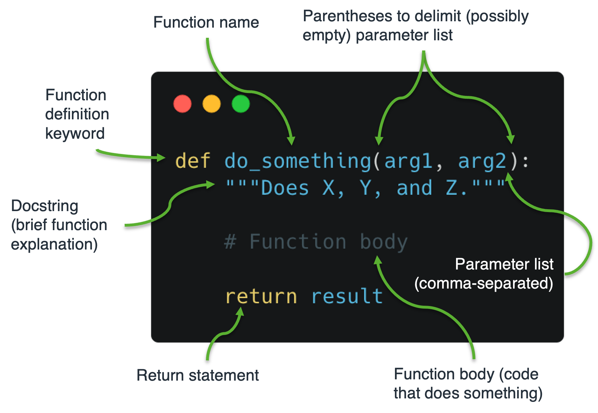

More about functions¶
Last week we talked about functions. In Python, a function…
is a reusable named block of code that completes a particular task or returns a value
is defined using the
defkeywordcan have zero or more arguments (sometimes called parameters)
may perform some task or return a value. The
returnstatement is used to return a value from a function
The image below shows the basic anatomy of a user-defined Python function.

Positional arguments¶
A function need not take any arguments or return any values.
[1]:
def say_hello(): # Function takes no arguments
print("Hello")
# No return statement
say_hello()
Hello
But usually a function will have arguments and return something.
[2]:
def make_greeting(name): # One argument
"""Make a greeting for someone.
Parameters
----------
name : str
Name of the person to be greeted.
Returns
-------
msg : str
A nice greeting message for whoever we wish to greet.
"""
msg = "Hello, " + name + ". Have a great day!"
return msg # Return the greeting
greeting = make_greeting('Fred') # Call function
print(greeting) # Use the returned value
Hello, Fred. Have a great day!
This is a simple case. The function has one argument called name, which is a positional (sometimes called required) argument. The function will not work if a value is not given for name.
[28]:
greeting = make_greeting() # No value for name
---------------------------------------------------------------------------
TypeError Traceback (most recent call last)
Input In [28], in <cell line: 1>()
----> 1 greeting = make_greeting()
TypeError: make_greeting() missing 1 required positional argument: 'name'
We can write a function with any number of positional arguments, but a value must be assigned to each when the function is called.
[5]:
def shopping(quantity, item, price):
print(f'{quantity} {item} cost £{price:.2f}')
shopping(6, 'apples', 2.2)
6 apples cost £2.20
Because the arguments are positional, we can pass in the values without the names and they will be implicitly assigned, but we must pass them in the correct order or the function will either not work, or it may lead to unexpected results.
[6]:
shopping(6, 'apples', 2.2) # Correct order
shopping(2.2, 'apples', 6) # Incorrect order
6 apples cost £2.20
2.2 apples cost £6.00
To summarise, when using positional arguments, the correct number of arguments must be specified in the correct order when the function is called.
Keyword arguments¶
When calling a function, arguments may be specified using the <keyword>=<value> format, which lifts the restriction on the order of argument specification. Using keyword arguments, we can call the shopping function and specify the arguments in a different order.
[8]:
shopping(item='apples', price=2.2, quantity=6)
---------------------------------------------------------------------------
TypeError Traceback (most recent call last)
/var/folders/c9/7yddvl1n2ss863cgfngj0wpm0000gp/T/ipykernel_26835/2323325012.py in <module>
----> 1 shopping(item='apples', price=2.2)
TypeError: shopping() missing 1 required positional argument: 'quantity'
Note that in the above function call, the order that arguments are passed differs from the call signature in the original function definition. So, keyword arguments allow for greater flexibility, but we must still provide an argument for each required parameter.
Default parameters¶
Arguments may be given default values when a function is defined.
[9]:
# Function arguments have default values
def shopping(quantity=6, item='apples', price=2.20):
print(f'{quantity} {item} cost £{price:.2f}')
Now, if a value is not specified when the function is called, the default value will be assumed.
[11]:
shopping()
shopping(item='apricots')
shopping(price=3.00)
shopping(quantity=36, item='Brazil nuts')
6 apples cost £2.20
6 apricots cost £2.20
6 apples cost £3.00
36 Brazil nuts cost £2.20
lambda functions¶
lambda functions are small anonymous functions created ‘on-the-fly’. Compared with normal functions defined using the def keyword, lambda functions have a more concise, but also a more restrictive, syntax.
Here’s how to define and call a lambda function that adds five to any number.
[12]:
(lambda number: number + 5)(10)
[12]:
15
Because lambda functions are anonymous, the above function no longer exists. However, it is possible to give a name to lambda functions and reuse them.
[13]:
add_five = lambda number: number + 5
add_five(10)
[13]:
15
lambda’s can be useful little things, but a detailed coverage of them is beyond the scope of this course. If you want to learn more about them I suggest you read this excellent article.